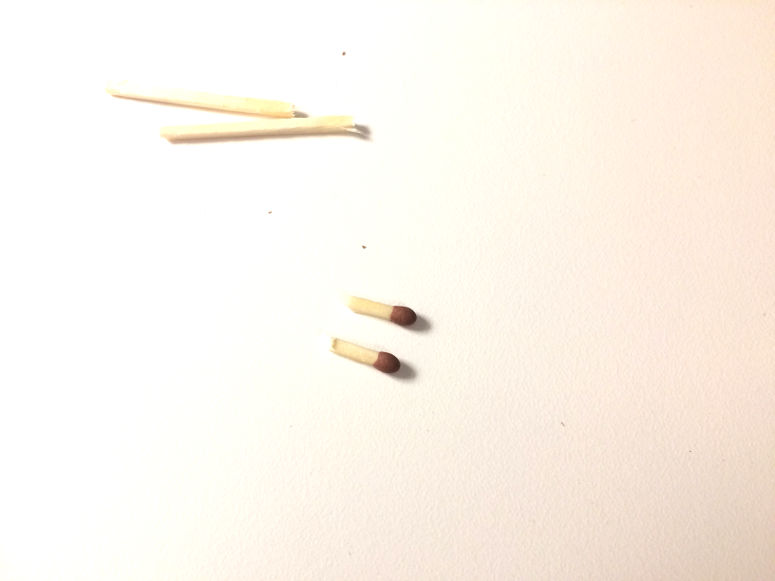
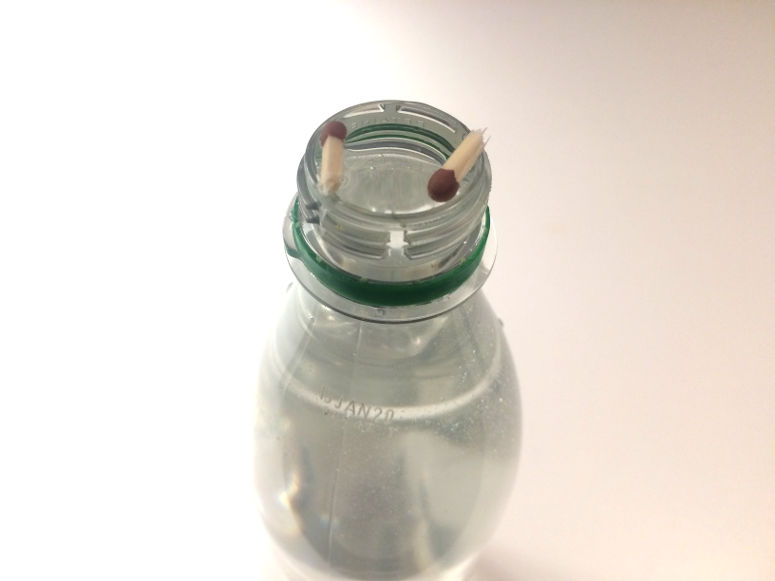
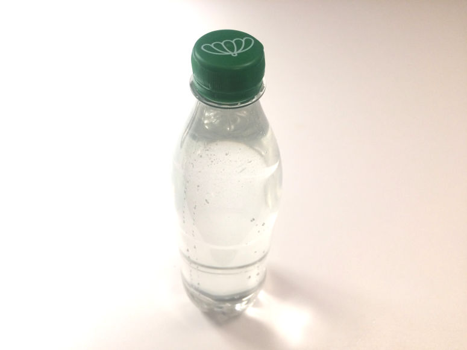
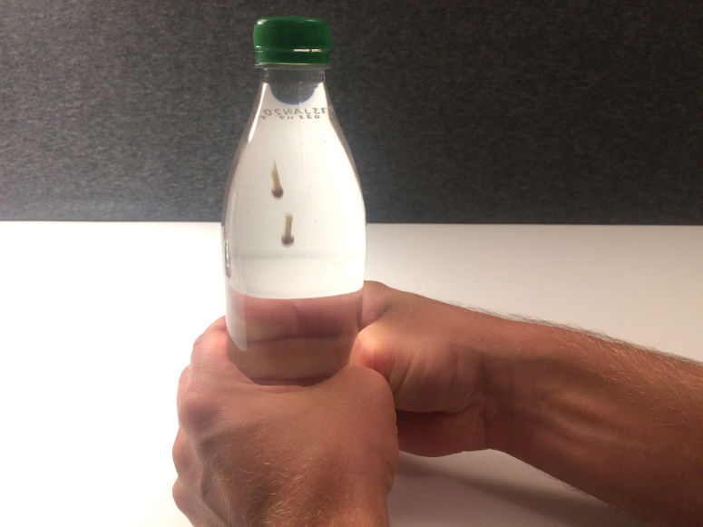
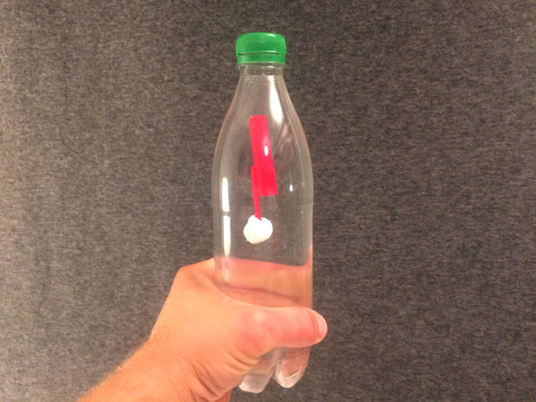

Весёлые и простые научные эксперименты для детей и взрослых.
Картезианский водолаз

Физика
Сожмите бутылку, и спички погружаются по команде. Это эксперимент о том, как плотность определяет, будет ли предмет плавать или тонуть в воде.
| Нравится: | Поделиться: | |
Видео

Материалы
- 2 спички
- Пластиковая бутылка 0.5 л
- Вода
Шаг 1


Шаг 2

Шаг 3

Шаг 4

Объяснение
Головка спички пористая и содержит маленькие поры с воздухом. Это означает, что плотность головки спички немного меньше воды, поэтому она плавает. Но когда вы сжимаете бутылку, вода проникает в поры, и воздух внутри сжимается. Это увеличивает плотность головки спички выше плотности воды, и она тонет.В отличие от воздуха, воду можно сжать лишь немного. Вы заметите это, если попробуете сжать бутылку, наполненную только водой.
Этот эксперимент назван в честь Рене Декарта - французского философа, математика и писателя, который, как говорят, изобрел его в 17 веке.
Эксперимент
Вы можете превратить эту демонстрацию в эксперимент. Так она станет лучше как научный проект. Для этого попробуйте ответить на один из следующих вопросов. Ответ на вопрос будет вашей гипотезой. Затем проверьте гипотезу, проведя эксперимент.- Что произойдет, если использовать бутылку 1.5 или 2 л?
- Что произойдет, если в бутылке будет немного воздуха?
- Что произойдет, если использовать более короткие или длинные кусочки спичек?
- Что произойдет, если использовать спички другого производителя?
Вариации
Вместо сжатия бутылки можно оставить крышку открытой и надавить большим пальцем на горлышко. Это работает только если палец полностью закрывает отверстие.Вместо пластиковой бутылки можно использовать стеклянную банку с винтовой крышкой. Водолаз погружается при нажатии на крышку.
Можно заменить спички другими предметами с воздухом внутри. Подойдут маленькие пакетики кетчупа или соевого соуса из ресторана. Если пакетик тонет, можно заставить его плавать, увеличив плотность воды растворением соли.

| Gilla: | Dela: | |
Content of website
© The Experiment Archive. Fun and easy science experiments for kids and adults. In biology, chemistry, physics, earth science, astronomy, technology, fire, air and water. To do in preschool, school, after school and at home. Also science fair projects and a teacher's guide.
To the top
© The Experiment Archive. Fun and easy science experiments for kids and adults. In biology, chemistry, physics, earth science, astronomy, technology, fire, air and water. To do in preschool, school, after school and at home. Also science fair projects and a teacher's guide.
To the top